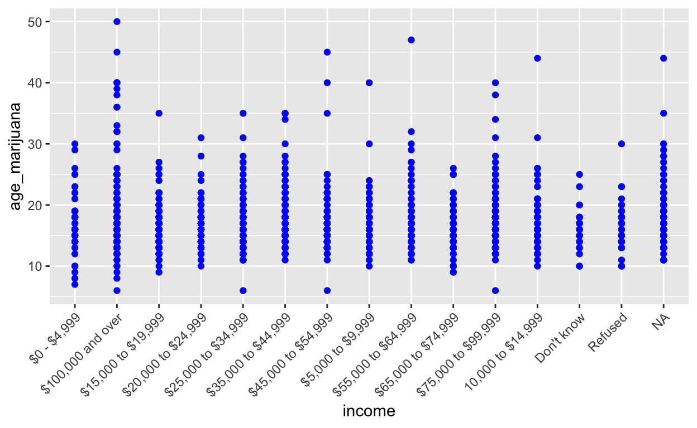

The following script can be used to import the data we will use for this example.
drug_by_year <- import(here("data", "drug_by_year.csv"),
setclass = "tbl_df")
recent_drug <- import(here("data", "2015_drug_dep.csv"),
setclass = "tbl_df")drug_by_yearincludes data from 2005 to 2015 and reports on the people who responded yes to using illicit substances in the last year.recent_drugincludes has data from 2015-2016 and shows the age of first drug use, a summed depression score, whether or not participants have been to rehab, have access to mental health services, and have health insurance.
Functions
As we saw in the previous post, using pre-formed functions in R (e.g., map()) can be incredibly useful for iterating through lists and data frames in an efficient and time-saving manner. An alternative or supplementary choice to using packages like purrr is the option of writing your own custom R functions independently of any function package. Previously, we learned how to add an inline anonymous function function(x) to map() in order to add additional arguments. Now we will cover how to formulate a custom function.
What is a function?

In R, a function can be defined as any formula that carries out some type of operation. For example:
100/5*7
[1] 140In this case, each mathematical operation (i.e., / and *) can be defined as a function. For all functions, there are three essential components:
body(): a collection of statements that defines what a function does
formals(): is the argument supplied to the function
environments(): collection of objects in a function
# example function
square <- function(x) {
x^2
}
# use of the function
sum(2)
[1] 2In the above function, whatever is contained in the function() is considered the body while the line below (i.e., x^2) that specifies the argument is considered the formal.
There are several different ways that functions can be saved:
- It can be stored as an object, which could be useful if you are planning on using it for future tasks.
triple <- function(x) {
x*3
}- It can be stored as a list, which could allow you to run more than one function in a loop
fun_list <- list(n = ~length(x),
n_miss = ~sum(is.na(x)),
mean = ~mean(x, na.rm = TRUE),
sd = ~sd(x, na.rm = TRUE),
min = ~min(x),
max = ~max(x))- It can be an anonymous function, which could be used when it is only going to be used once.
function(x) {
x*3
}
function(x) {
x*3
}Function 2: Summarize Mean, SD, Min, and Max using by a Group_By Variable
Now let’s take the age function we created earlier (evaluating whether age of first marijuana use was before or after the age of 18) and use it as a grouping variable to examine the mean, standard deviation, and min/max values for the age of first use variable in the “recent_drug,csv” data set.
First we name the data set, the outcome variable, and the grouping variable. We will use these to call up this info when applying the completed function.
Next, we use “enquo”, part of the ‘dplyr’ package which should be loaded if you have not already done so, to select the variables we are planning to use in defining the function. Enquo helps R search for these variables within our data frame instead of searching the global environment for them. When using enquo the “!!” symbol will be necessary anytime we want to refer back to these variables that we are defining here in the first steps of creating our function. EX. instead of writing mean(our_var_name) as usual we will need to write mean(!!our_var_name).
The %>% symbol is a pipe operator and is used to feed each piece of our function through the proceeding statement, so that at each step the result of the previous argument is fed through the following argument. Ex. dataset %>% step1 %>% step2.
4)“group_by” tells R to divide the outcome into a separate row for each category of the grouping variable.
- “summarize” is the step where we invoke the operations and calculations on our outcome variable. The results of the summarize step should be separated thanks to the group_by statement in step 4,
The function can now be stored and run on our data. We can examine the mean first age of use by any of the other variables in our dataset, including the 18 or below variable we created in the first function we created. Other interesting grouping variables might be income, ethnicity, or mental health status. If you decide you want to group our outcome first by two variables this is explored in function 3.
library(dplyr)
fun2_mean1group <- function(data, cat_var, num_var){
cat_var <- enquo(cat_var)
num_var <- enquo(num_var)
data %>% #if (cat_var2 < 17)
group_by(!!cat_var) %>%
summarize(mean = mean(!!num_var, na.rm = TRUE),
sd = sd(!!num_var, na.rm = TRUE),
min = min(!!num_var, na.rm = TRUE),
max = max(!!num_var, na.rm = TRUE))
}
fun2_mean1group(recent_drug, mental_health, age_marijuana)
# A tibble: 4 x 5
mental_health mean sd min max
<chr> <dbl> <dbl> <dbl> <dbl>
1 <NA> 17.2 4.55 6 44
2 Don't know 17.5 1.29 16 19
3 No 17.3 4.51 6 50
4 Yes 17.4 5.03 10 45Function 3: Two grouping variables
- If you wish to add a second “group_by” variable start by including a variable name in the Function itself, and include an additional enquo command
- Now in the “group_by” command include a second variable using the “!!” as before. ex: group_by(!!group_var1, !!group_var2)
- after the “summarize” command include an additional %>% and add the “spread” command naming the variable as before (!!group_var1), and indicating the outcome you wish to report.
fun3_mean2groups <- function(x, cat_var1, cat_var2, outcome_var){
cat_var1 <- enquo(cat_var1)
cat_var2 <- enquo(cat_var2)
num_var <- enquo(outcome_var)
x %>%
group_by(!!cat_var1, !!cat_var2) %>%
summarize(mean = mean(!!num_var, na.rm = TRUE),
sd = sd(!!num_var, na.rm = TRUE),
min = min(!!num_var, na.rm = TRUE),
max = max(!!num_var, na.rm = TRUE))%>%
spread(!!cat_var1, mean)
}
fun3_mean2groups(recent_drug, mental_health, income, age_marijuana)
# A tibble: 48 x 8
income sd min max `Don't know` No Yes `<NA>`
<chr> <dbl> <dbl> <dbl> <dbl> <dbl> <dbl> <dbl>
1 $0 - $4,999 4.57 10 21 NA NA 15.2 NA
2 $0 - $4,999 4.63 8 23 NA NA NA 16.2
3 $0 - $4,999 4.83 7 30 NA 17.5 NA NA
4 $100,000 and over 5.26 13 39 NA NA NA 18.5
5 $100,000 and over 5.61 6 50 NA 17.7 NA NA
6 $100,000 and over 8.82 13 45 NA NA 19.8 NA
7 $15,000 to $19,9~ 2.12 13 19 NA NA 15.5 NA
8 $15,000 to $19,9~ 3.39 9 24 NA NA NA 16.0
9 $15,000 to $19,9~ 3.91 10 35 NA 17.0 NA NA
10 $20,000 to $24,9~ 2.57 12 22 NA NA 16 NA
# ... with 38 more rowsFunction 4: Creating a Function Using GGPlot
To plot our outcome variable, in this case age of first marijuana use, we can create a function which will plot the age of first grouped by variable of interest. To test our function we will use “income” as category to group age of first marijuana use against on the x-axis.
- Once again we begin by naming the variables our function will use to pull data from. In this case we will include a data variable to name the dataset, “x” for our x-axis variable, and “y” for our y-axis variable.
- Next, in the open bracket, we will include our plotting function in this case ggplot, and we will name the dataset and x/y variables so they match the variable names we will use in the final function.
- Now we add the method we will use to plot, choosing one of the ggplot options. In this case, we selected ‘geom_point’ which will provide a number of dots along the y-axis for each category. A color can also be selected. Ex. geom_point(color = “magenta”).
fun4_plot <- function(data, x, y) {
ggplot(data, aes_string(x, y)) +
geom_point(color = "blue") +
theme(axis.text.x = element_text(angle = 45, hjust = 1))
}
fun4_plot(recent_drug, "income", "age_marijuana")
Function 5: Plotting Mean, SD, Min, & Max
To plot the summary data for our age of first use variables (age_marijuan, age_meth, age_heroin, and age_cocaine) found in our “recent_drug.csv” data we can create a function which will plot all of our summary variables (mean, sd, min, and max) at once.
#not working can delete
fun5_plotsummary <- function(filename) {
dat <- read.csv(file = filename, header = FALSE)
mean_age <- apply(dat, 2, mean, na.rm = TRUE)
plot(mean_age)
sd_age <- apply(dat, 2, sd, na.rm = TRUE)
max_age <- apply(dat, 2, max, na.rm = TRUE)
plot(max_age)
min_age <- apply(dat, 2, min, na.rm = TRUE)
plot(min_age)
}
fun4_plot(recent_drug)